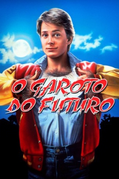

O Garoto do Futuro (1985)


He always wanted to be special... but he never expected this!

Avaliação (TMDb):


6.2/10 (746 votos)
Avaliação (Usuário):
Outro Título:Teen Wolf
País:United States, 91 minutos
Idiomas falados:Inglês, Português
Gênero(s):Comédia, Fantasia, Romance
Diretor(s):Rod Daniel
Codec:MPEG-2 (DVD)
Número: 3430
Sinopse:
Scott é um adolescente que descobre que vem de uma família de lobisomem. Com medo da rejeição, ele esconde o segredo de todos, mas depois torna-se o garoto mais popular da escola.
Elenco:
Michael J. Fox, James Hampton, Susan Ursitti, Jerry Levine, Matt Adler, Lorie Griffin, Jim McKrell, Mark Arnold, Jay Tarses, Mark Holton
Tipo de mídia: DVD5,
Legendas: Inglês, Francês, Espanhol, Português
Alugado: Não
Tela: 1.85:1